Theming
ggplot(early_colleges, aes(x = state)) +
geom_bar() +
labs(title = "Early Colleges")
Jason A. Heppler
Themes allow you to control the appearance of non-data elements. We can build graphics that are visually appealing through the modification, addition, or subtraction of titles, axis labels, tick marks, and legends.
Consult the theming documentation to see all the available options.
Let’s look at a new data set.
library(historydata)
data("early_colleges")
early_colleges %>% head(5)## Source: local data frame [5 x 6]
##
## college original_name city state
## (chr) (chr) (chr) (chr)
## 1 Harvard NA Cambridge MA
## 2 William and Mary NA Williamsburg VA
## 3 Yale NA New Haven CT
## 4 Pennsylvania, Univ. of NA Philadelphia PA
## 5 Princeton College of New Jersey Princeton NJ
## Variables not shown: established (int), sponsorship (chr)ggplot(early_colleges, aes(x = state)) +
geom_bar() +
labs(title = "Early Colleges")
ggplot comes with a few default themes:
| Theme | Description |
|---|---|
| theme_bw() | A theme with white background and black gridlines. |
| theme_classic() | A classic-looking theme, with x and y axis lines and no gridlines. |
| theme_gray() | The default theme function. |
| theme_minimal() | A minimal theme with white background and faint gridlines. |
| theme_linedraw() | A theme for making line graphs have high contrast. |
ggplot(early_colleges, aes(x = state)) +
geom_bar() +
theme_minimal() +
labs(title = "Early Colleges")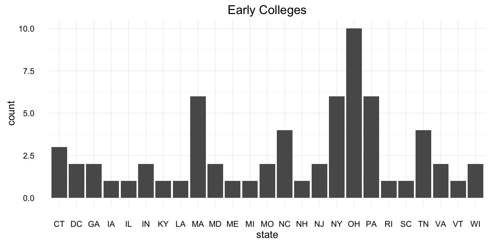
ggplot(early_colleges, aes(x = state)) +
geom_bar() +
theme_classic() +
labs(title = "Early Colleges")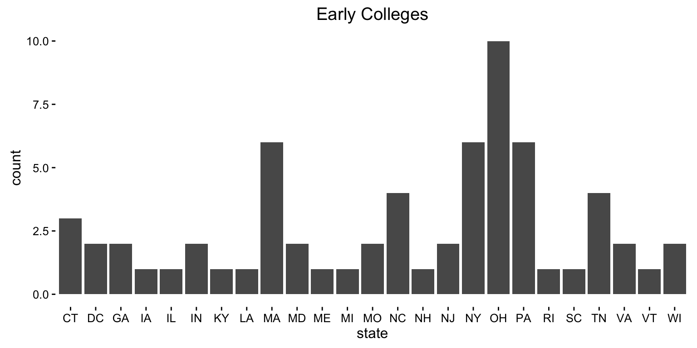
We could also leverage the ggthemes package, which collects several theme options you can call upon for your visualizations.
# install.packages('ggthemes')
library(ggthemes)## Warning: package 'ggthemes' was built under R version 3.2.3ggplot(early_colleges, aes(x = state)) +
geom_bar() +
theme_economist() +
labs(title = "Early Colleges")
Using Stephen Few’s “Practical Rules for Using Color in Charts.”
ggplot(early_colleges, aes(x = state)) +
geom_bar() +
theme_few() +
labs(title = "Early Colleges")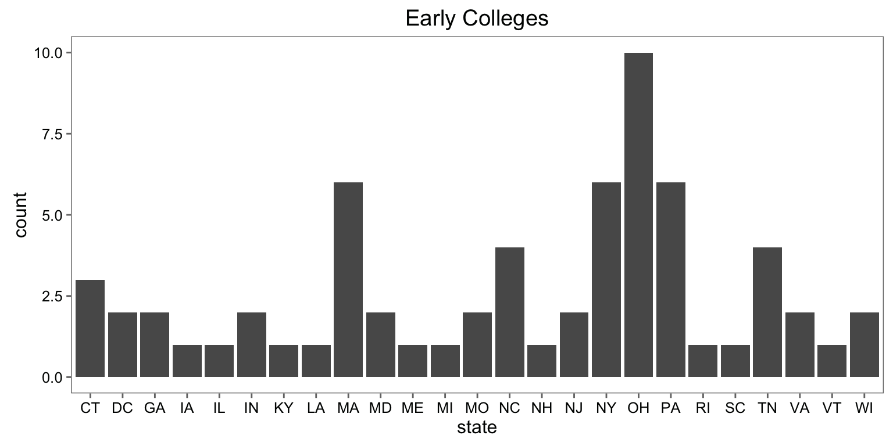
ggplot(early_colleges, aes(x = state)) +
geom_bar() +
theme_fivethirtyeight() +
labs(title = "Early Colleges")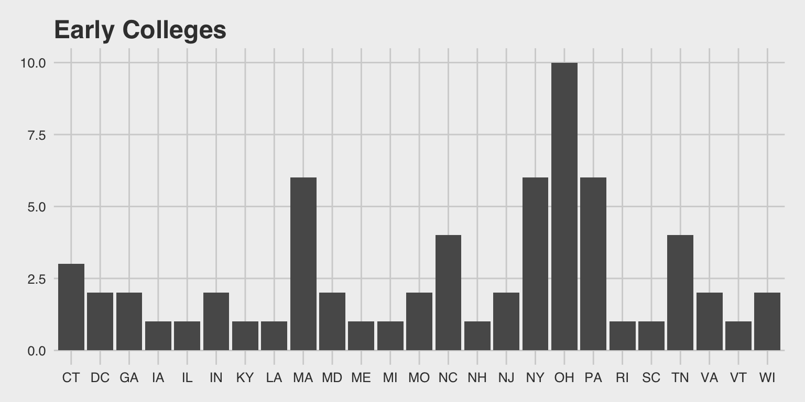
ggplot(early_colleges, aes(x = state)) +
geom_bar() +
theme_tufte() +
labs(title = "Early Colleges")For example:
theme(
axis.text = element_text(size = 14),
legend.key = element_rect(fill = "navy"),
legend.background = element_rect(fill = "white"),
legend.position = c(0.14, 0.80),
panel.grid.major = element_line(colour = "grey40"),
panel.grid.minor = element_blank(),
panel.background = element_rect(fill = "navy")
)Let’s modify our college counts chart.
ggplot minimal themelibrary(showtext) # custom fonts
font.add.google("Lato")
ggplot(early_colleges, aes(x = state)) +
geom_bar(fill = "#007D68") +
labs(title = "Early Colleges by State") +
theme_minimal() +
theme(
plot.title = element_text(size = 15, face = "bold"),
text = element_text(family="Lato", size=12),
axis.text = element_text(face = "bold", size = 8),
axis.text.x = element_text(angle = 90, hjust = 1)
)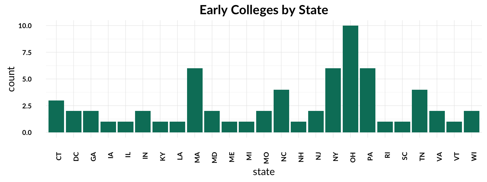
data("judges_people")
# Remove rows with missing data
judges_sub <- judges_people[complete.cases(judges_people),]
judges_sub %>% head(5)## Source: local data frame [5 x 13]
##
## judge_id name_first name_middle name_last name_suffix birth_date
## (int) (chr) (chr) (chr) (chr) (int)
## 1 2705 James Lindsay Almond Jr. 1898
## 2 58 Glenn Leroy Archer Jr. 1929
## 3 87 Thomas Austin Ballantine Jr. 1926
## 4 3297 Lindley Garrison Beckworth Sr. 1913
## 5 144 David Owen Belew Jr. 1920
## Variables not shown: birthplace_city (chr), birthplace_state (chr),
## death_date (int), death_city (chr), death_state (chr), gender (chr),
## race (chr)ggplot(judges_sub,
aes(x = death_date,
y = reorder(factor(name_last), death_date))) +
geom_point() +
labs(x = "", y ="",
title = "Federal Judges, Death Date")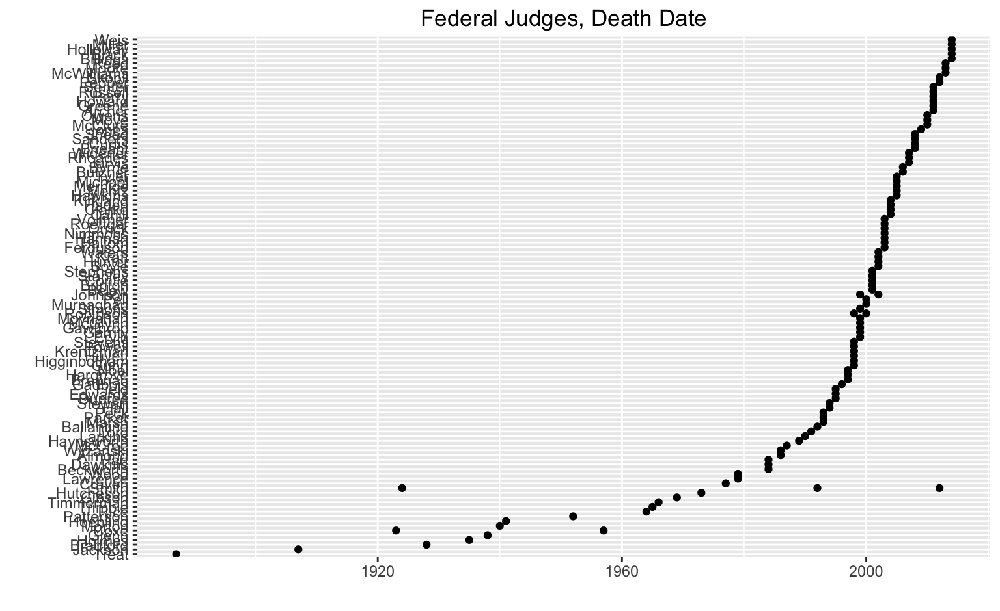
judges.plot.lifespan <- ggplot(judges_sub, aes(x = death_date,
y = reorder(factor(name_last), birth_date)))
judges.plot.lifespan + geom_segment(aes(yend = name_last, xend=birth_date)) +
geom_point() +
theme_minimal() +
labs( x="Year of Death",
y="",
title="Lifespans of Appointed Judges") +
theme(panel.grid.major.y=element_blank(),
axis.ticks=element_blank(),
axis.title=element_text(size=8,face="bold"),
axis.text.y = element_text(size=6)
)
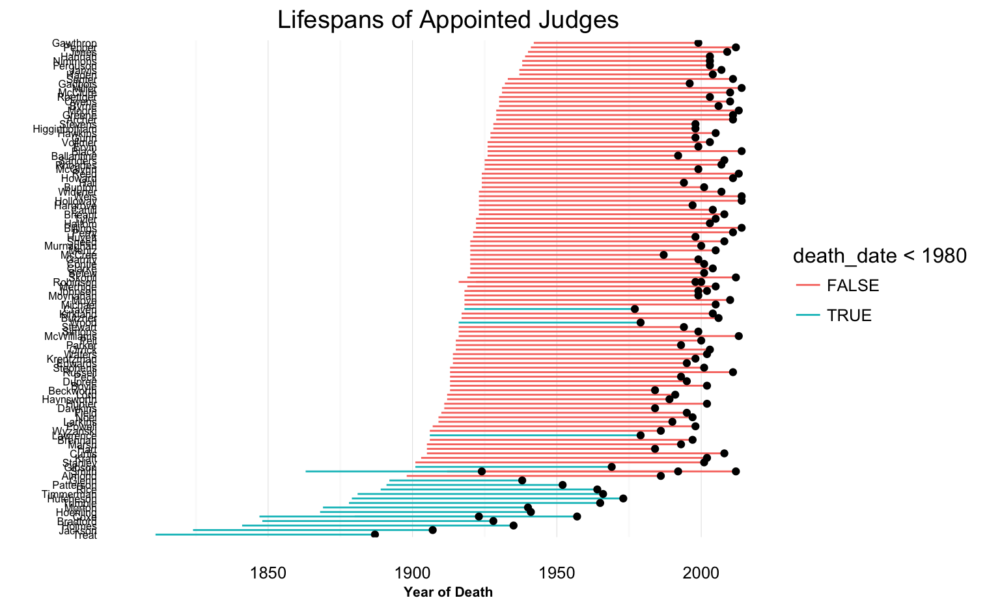
Let’s load up another set of data by reading in a CSV file.
# Data prep for next example
superfund <- read.csv("../data/superfund_sites.csv")
superfund.by.state <- superfund %>%
group_by(St) %>% # St=state
summarise(count=n())
superfund.by.state %>% head(5)## Source: local data frame [5 x 2]
##
## St count
## (fctr) (int)
## 1 1
## 2 AK 6
## 3 AL 13
## 4 AR 9
## 5 AZ 9ggplot(superfund.by.state, aes(St, count)) +
geom_bar(stat="identity") +
labs(title="Superfund Sites by State") +
theme_minimal() + theme(legend.position='none') +
labs(x = "State", y = "Count")
ggplot(superfund.by.state, aes(St, count)) +
geom_bar(stat="identity", aes(fill = count > 60)) +
labs(title="Superfund Sites by State") +
theme_minimal() + theme(legend.position='none') +
labs(x = "State", y = "Count") +
scale_fill_manual(values = c('#4C4C4C', '#8E001C'))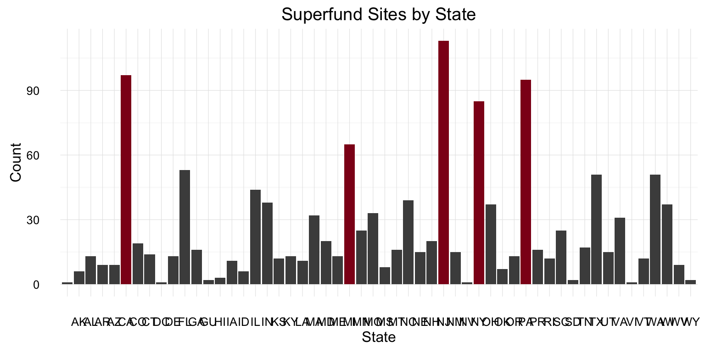
# install.packages('gapminder')
library(gapminder)
keepers <- subset(gap_with_colors,
continent %in% c("Africa", "Europe") & year == 2007)
ggplot(keepers, aes(x = gdpPercap, y = lifeExp)) +
geom_jitter(position = position_jitter(width = 0.1, height = 0), alpha = 1/4) +
geom_text(data = subset(keepers, gdpPercap > 30000), aes(label = country))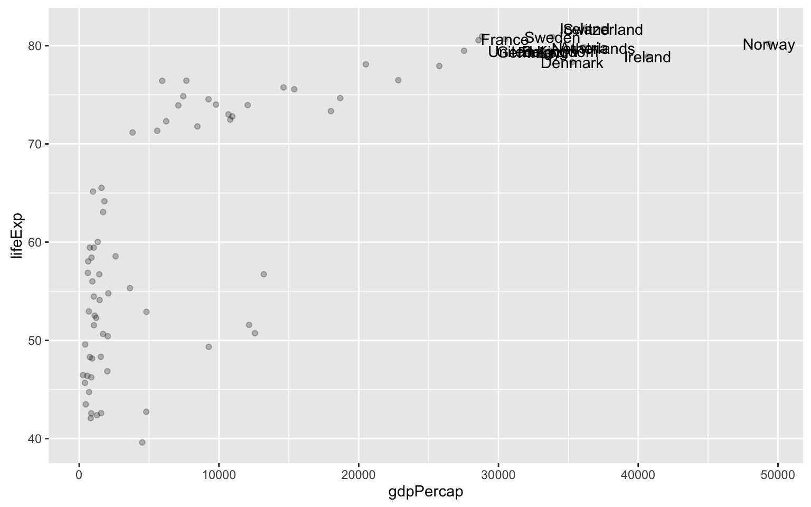
# install.packages('gapminder')
# install.packages('ggrepel')
library(gapminder)
library(ggrepel)
keepers <- subset(gap_with_colors,
continent %in% c("Africa", "Europe") & year == 2007)
ggplot(keepers, aes(x = gdpPercap, y = lifeExp)) +
geom_jitter(position = position_jitter(width = 0.1, height = 0), alpha = 1/4) +
geom_text_repel(data = subset(keepers, gdpPercap > 30000), aes(label = country))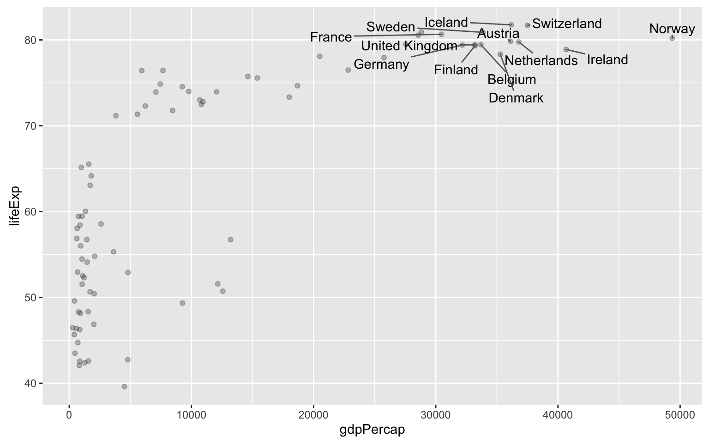
ggplot does not come with a default method for visualizing networks, but communities of users are working to bring network visualization into the grammar of graphics.
Note that these are only for building network visualizations. If you need to do network analysis, you will need to leverage packages like igraph.
# install.packages("geomnet")
library(geomnet)
library(historydata)
data('tudors')
tudors %>% head(5)## Source: local data frame [5 x 3]
##
## person_1 person_2 relationship
## (chr) (chr) (chr)
## 1 Henry VII Elizabeth of York spouse
## 2 Arthur Tudor Catharine of Aragon spouse
## 3 Henry VIII Catharine of Aragon spouse
## 4 Henry VIII Anne Boleyn spouse
## 5 Henry VIII Jane Seymour spousetudor.network <- ggplot(data = tudors, aes(from_id = person_2, to_id = person_1))
tudor.network + geom_net(label = TRUE, linewidth=0.5,
fontsize = 3, size = 6,
ecolour = ifelse(tudors$relationship == "child", "#a6cee3", "#b2df8a")) +
theme_net() +
labs(title = "Tudors")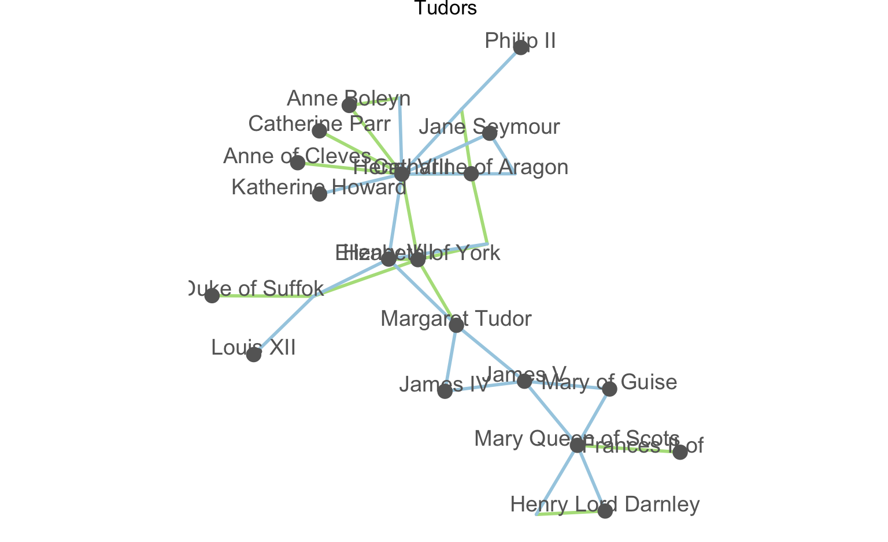
data("lesmis")
lesmisnet <- merge(lesmis$edges, lesmis$vertices,
by.x="from", by.y="label", all=TRUE)
lemisnetwork <- ggplot(data=lesmisnet, aes(from_id=from, to_id=to))
lemisnetwork + geom_net(layout="fruchtermanreingold",
label=TRUE, vjust=-0.5,
aes(linewidth = degree/5)) + theme_net()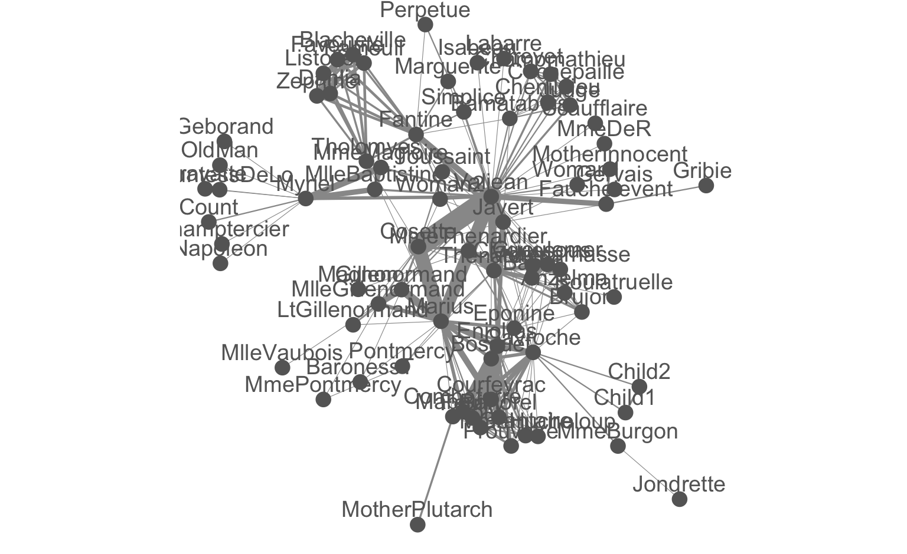
library(ggmap)
basemap <- get_map(location="United States", zoom = 4, maptype = "terrain")
ggmap(basemap) +
geom_point(data=superfund_sites, aes(x=longitude, y=latitude), color="#894D46", size = 0.5, na.rm = TRUE) +
coord_map() +
theme(axis.ticks.y = element_blank(),axis.text.y = element_blank(), # get rid of x ticks/text
axis.ticks.x = element_blank(),axis.text.x = element_blank(), # get rid of y ticks/text
plot.title = element_text(lineheight=.8, face="bold", vjust=1))## Warning: package 'ggmap' was built under R version 3.2.3## Google Maps API Terms of Service: http://developers.google.com/maps/terms.## Please cite ggmap if you use it: see citation('ggmap') for details.##
## Attaching package: 'ggmap'## The following object is masked from 'package:plotly':
##
## wind## The following object is masked from 'package:magrittr':
##
## inset## Map from URL : http://maps.googleapis.com/maps/api/staticmap?center=United+States&zoom=4&size=640x640&scale=2&maptype=terrain&language=en-EN&sensor=false## Information from URL : http://maps.googleapis.com/maps/api/geocode/json?address=United%20States&sensor=false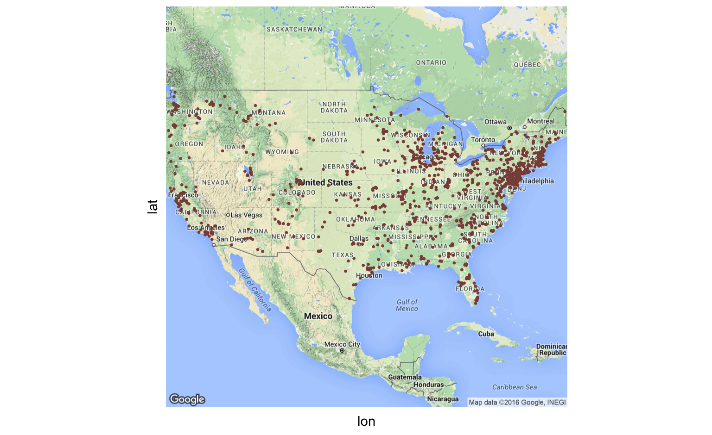